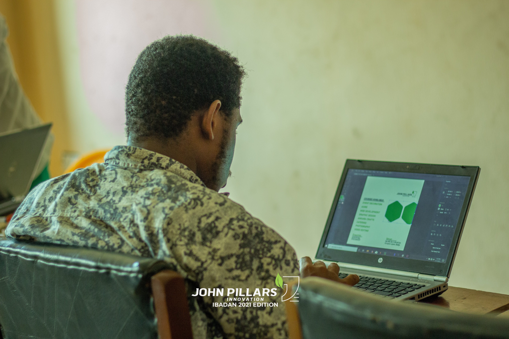
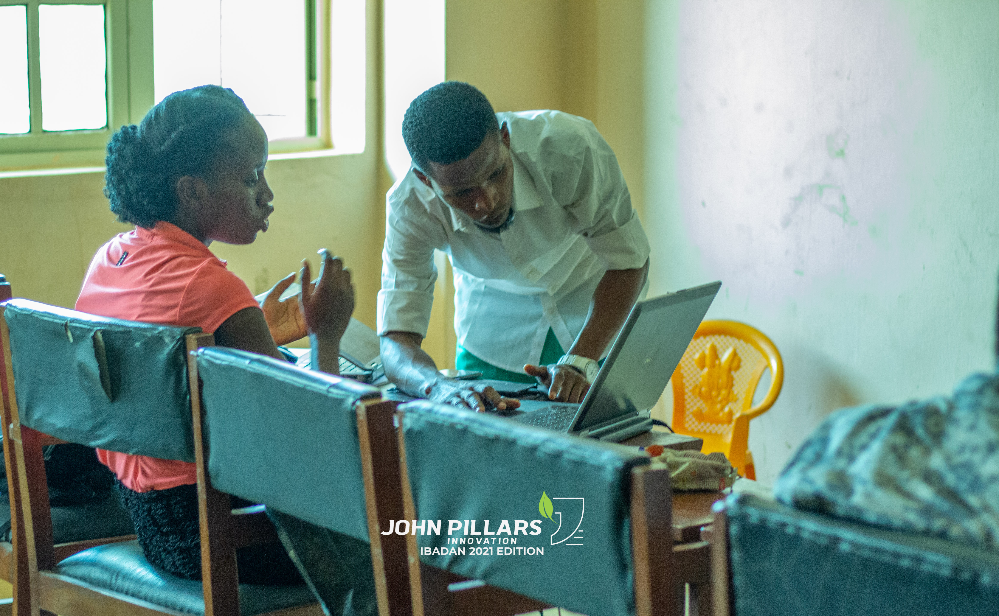
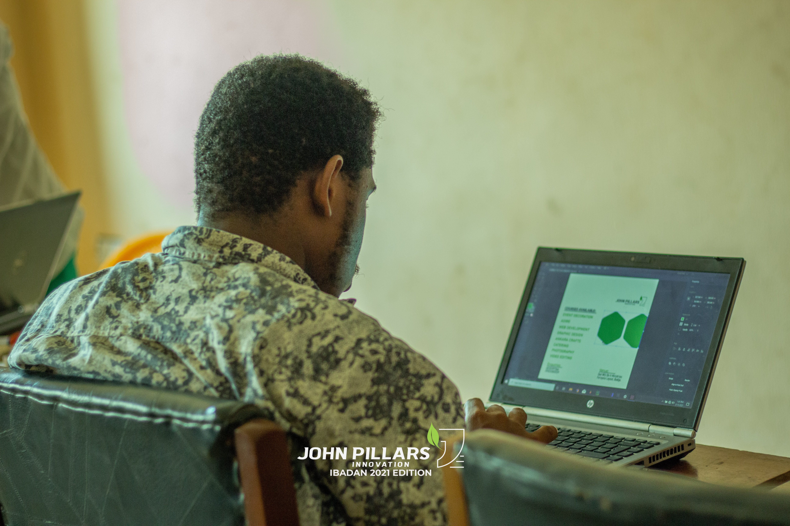
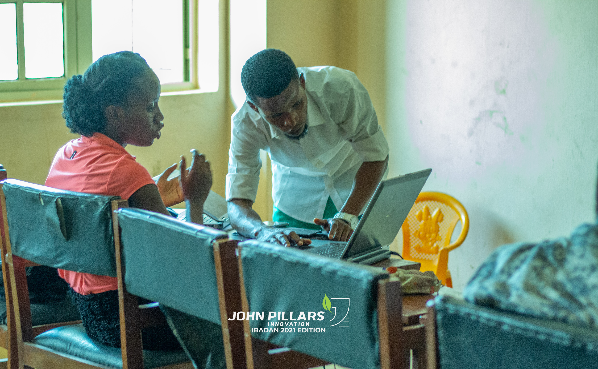
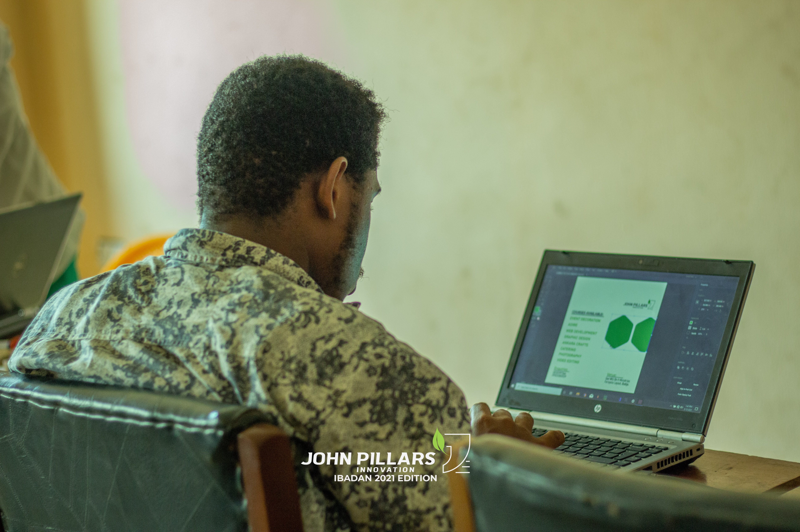
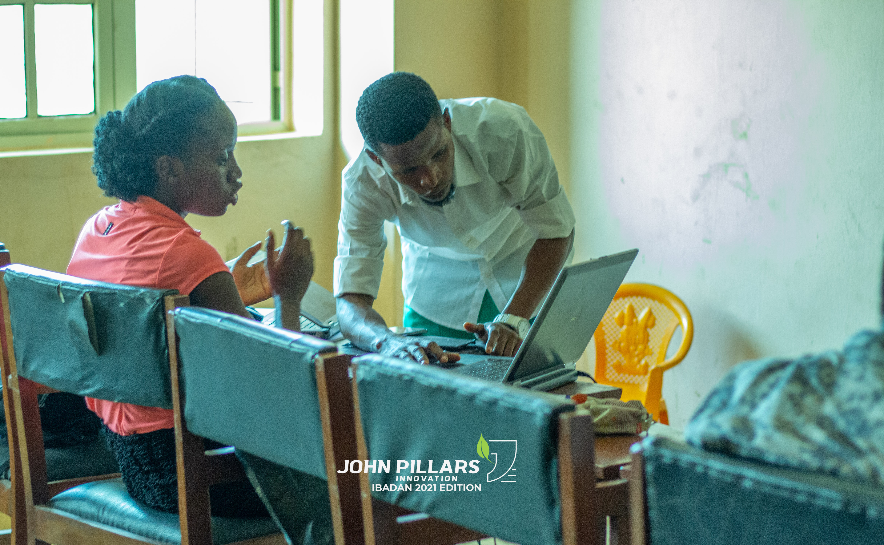
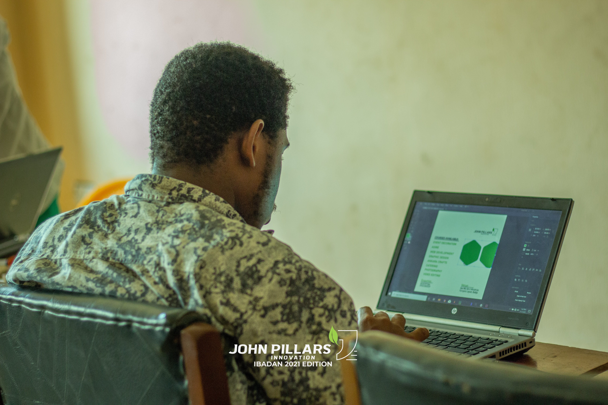
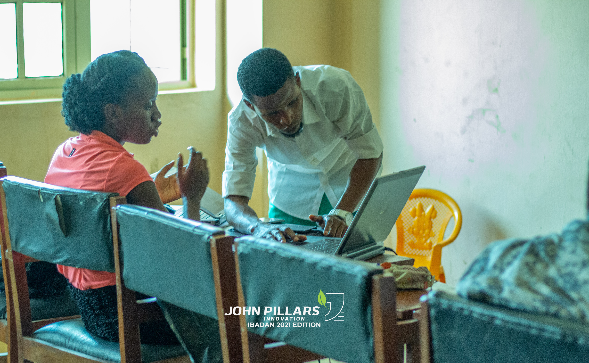

Graphic design is the act of creating communication line between someone and an end user. It goes beyond designing fliers, logos and banners but creating a message through colors, text, figures pictures and user interfaces. It is majorly communication with designs.
Without graphic design businesses will not be able to express their services and products. Graphic designer solve the lot of communication issues by making messages more attractive, specific and concise; a 10 or more sentences of message can be passed through a single design.
Graphic design has brought colors, oneness to our world. No one can do without graphic design because it is part of our world and everybody designs.
Challenges:
A challenge we face is getting students who are ready with tools.
Currently we have two excellent students who are doing very well and can design from scratch and they are doing it well. Though we are working at getting Adobe products like illustrator and Photoshop.
So far we've been able to impact the knowledge of a good design which is understanding the basic principle of a design and simplicity. Even though they've not been able to proceed with other software, they've been doing so well with what they have.
Encouragements:
For people out there, when you see a true and Legal opportunity for learning that is almost free such as John Pillars Innovation, please jump at it as long as you can afford to.
After the training they should be communication and synchronisation between the tutors and the students in order to enforce continuity of learning from now till they are willing to continue practicing these things, because practicing actually helps to prove the fact that you have learnt well.
I will also encourage taking free jobs if there are no jobs yet
Faith Owolabi-Tutor